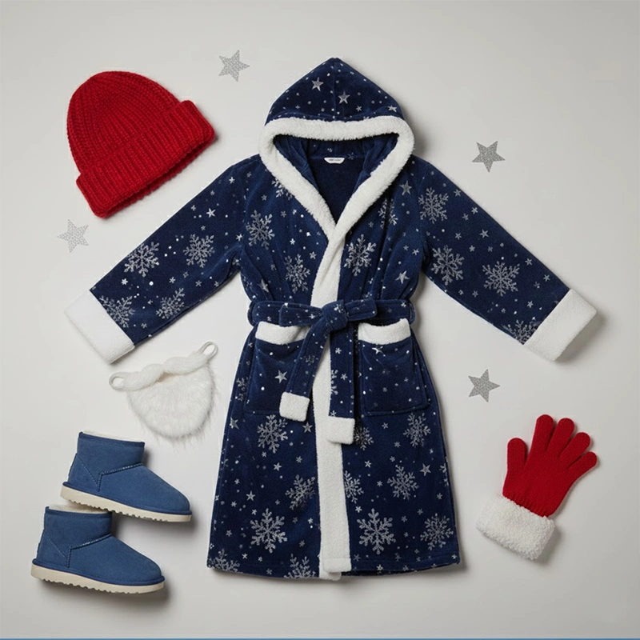
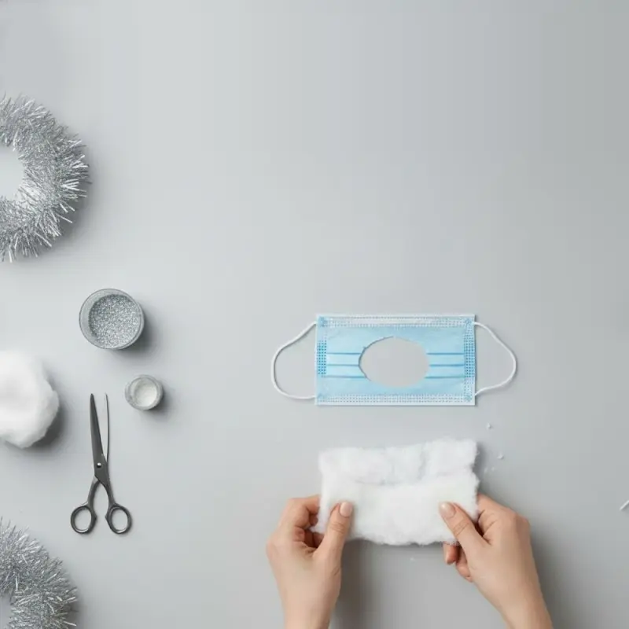
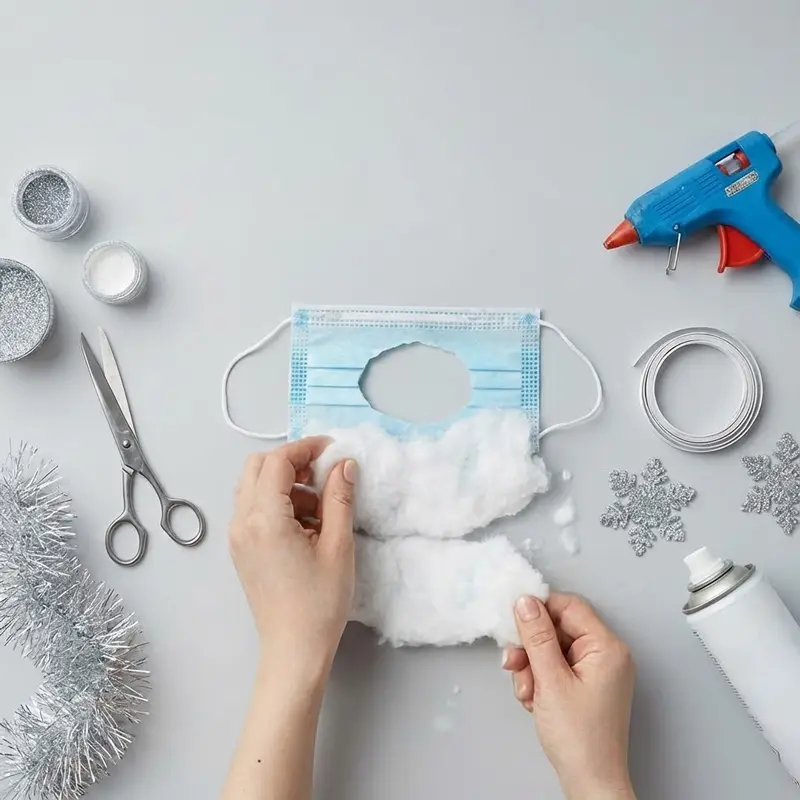
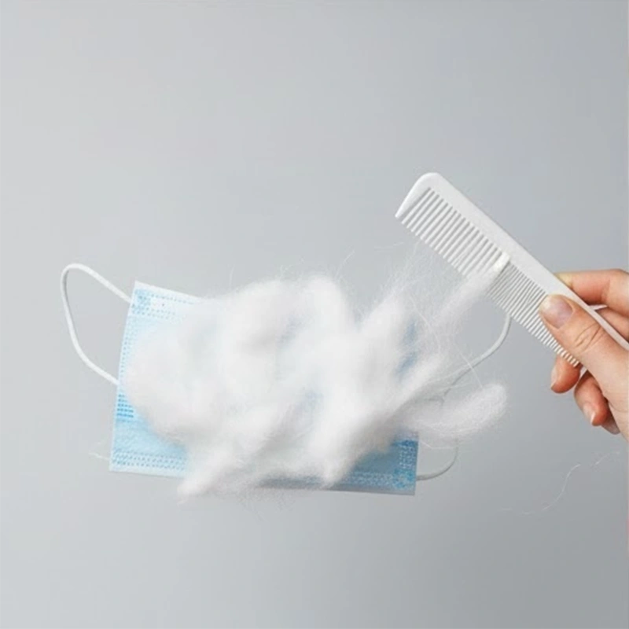
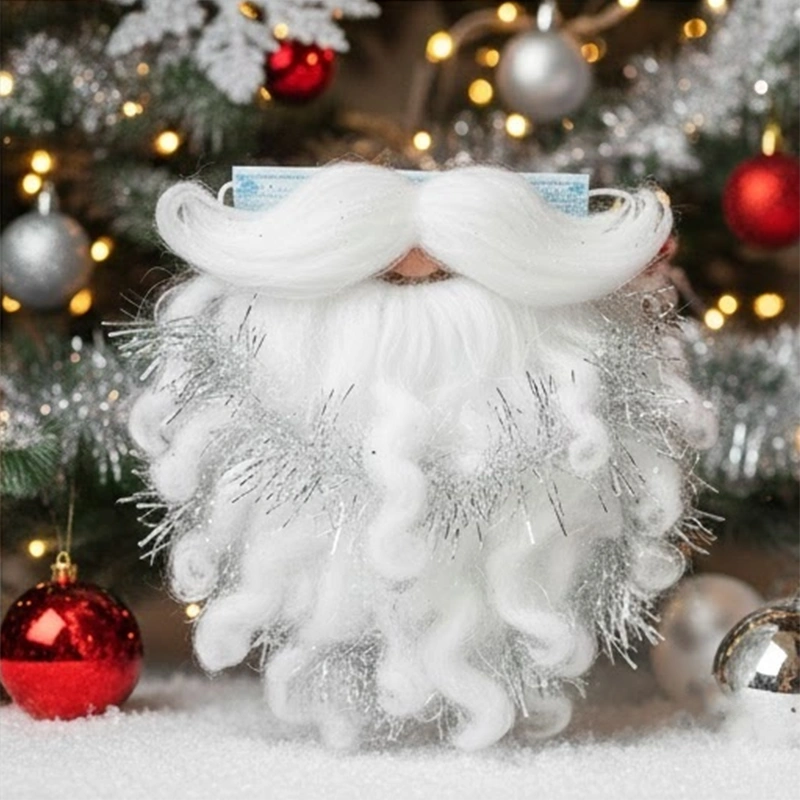

Подборка предметов гардероба

- Шапка
- Борода из ваты
- Перчатки
- Валенки или меховые тапочки
- Длинный махровый халат со снежинками
- Снежинки из фольги
Как сделать бороду
Вам потребуется:
- Белая вата или синтепон
- Клей ПВА или термопистолет, ножницы
- Медицинская маска для лица
- Блестки и мишура
-
Шаг 1

Вырежьте в медицинской маске отверстие для рта.
-
Шаг 2

Нарвите вату или синтепон на небольшие кусочки. Приклейте их послойно на медицинскую маску, чтобы борода выглядела густой.
-
Шаг 3

Концы ваты слегка начешите расческой — борода получится пушистой.
-
Шаг 4

Сбрызните бороду лаком для волос и, пока он не высох, посыпьте немного серебристых блесток или мишуры.

Гримерная
Посетите гримерную нашего театра и узнайте, как сделать быстрый грим для Деда Мороза